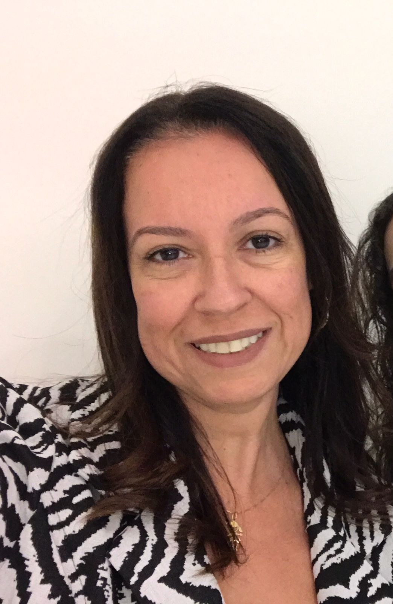
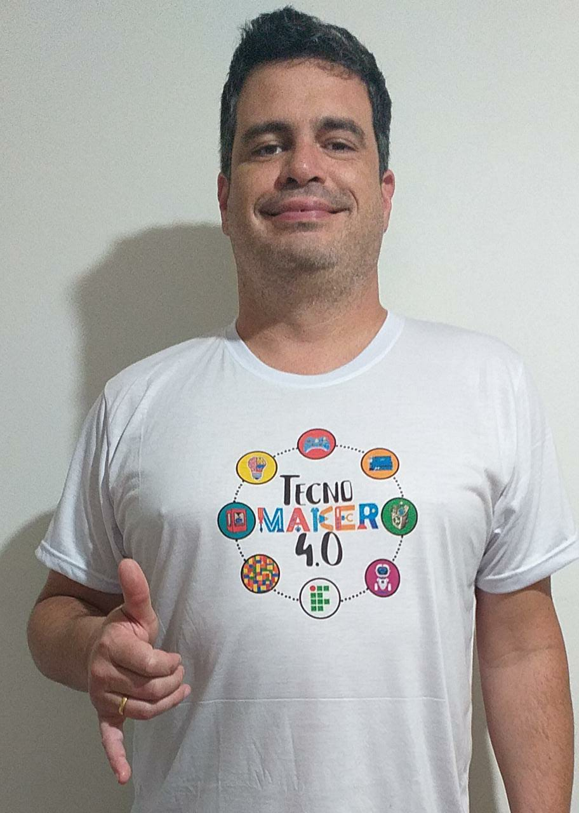
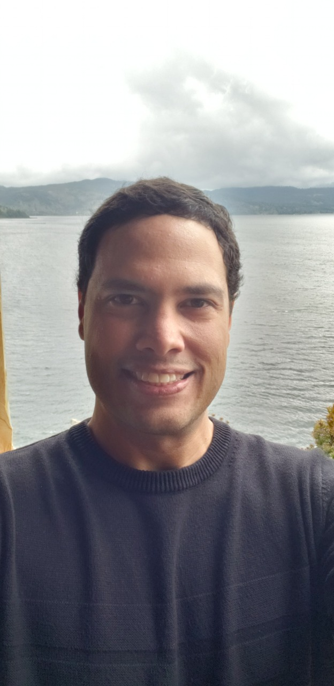

Dra. em Ciência da Computação (UFRGS). Tem experiência na área de Inteligência Artificial, informática na educação, iniciação tecnológica e tecnologias assistivas.

Mestre em Eng. Mecânica (UFRGS). Tem experiência em instrumentação e ensaios, iniciação tecnológica, Cultura Maker e fabricação digital.Doutora em Educação, CEO da INSIGHT Consultoria Educacional e Corporativa. Atua na área da neurociências com interface na educação, educação em saúde e no âmbito da gestão.

Professor visitante do IFRS Campus Rio Grande. Tem experiência na área de Ciência da Computação, atuando principalmente nas seguintes áreas: Sistemas Multi-Agentes, Jogos Computacionais e Simulação Baseada em Agentes.Graduanda em Engenharia Mecânica.